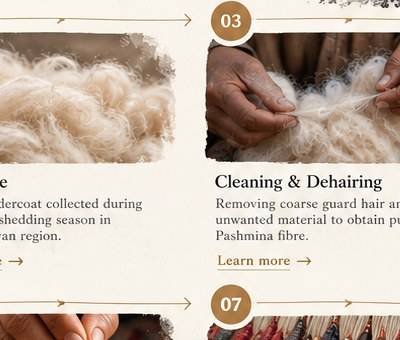
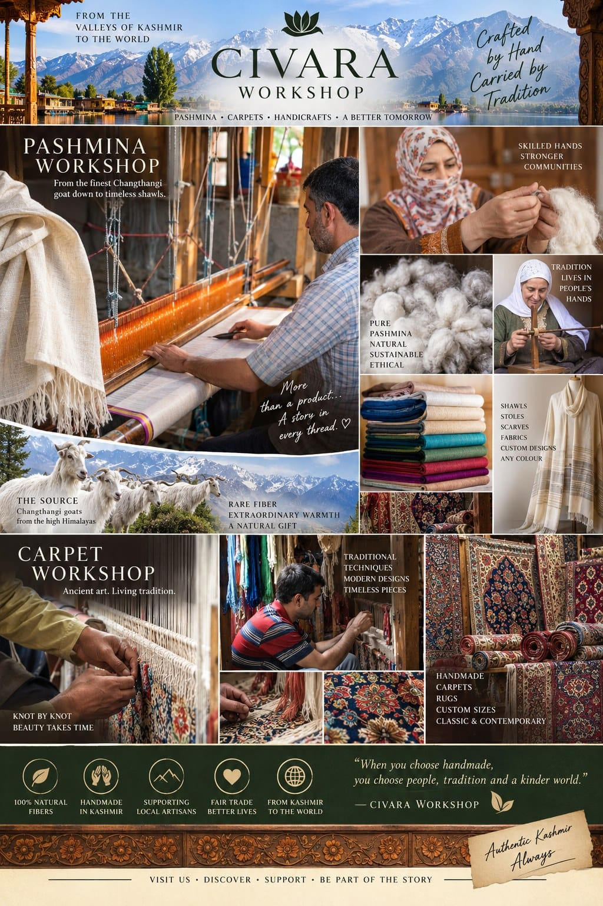
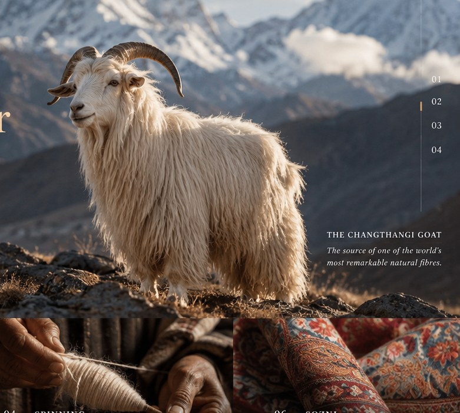
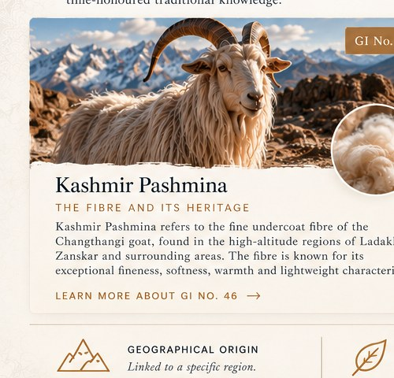

What is it made from?
Ask for the fibre composition and for supporting information where available. Softness or appearance alone does not establish composition.
KASHMIR PASHMINA EDUCATION
Discover the fibre, the craft, the people and the story behind Kashmir Pashmina.
Begin the journey →
WHY THIS EDUCATION EXISTS
Pashmina is often described simply as a soft and luxurious shawl. But behind that shawl is a much longer story.
A Himalayan animal. A precious natural fibre. Generations of knowledge. Spinners. Weavers. Embroiderers. Artisans.
This journey takes you from the origin of the fibre to the finished textile — while keeping one important distinction clear: fibre identity, production method and traditional craft are related, but they are not the same thing.

THE JOURNEY OF PASHMINA
Explore twelve lessons that follow the material, the techniques and the people behind the textile.
FROM OUR ARCHIVE
Real photographs connected to the Civara Workshop story — preserved here as part of our growing visual archive.
CIVARA WORKSHOP ARCHIVE
These images are kept as documentary material rather than decorative stock photography. We will continue adding original photographs of fibre, spinning, weaving, artisans, looms, finished textiles and the places connected to our work.




THE PICTURES WITHIN THE PICTURE
The complete archive collage stays intact above. Below, the photographs within it are brought forward individually so the people, fibre, looms, textiles and landscapes can be seen more clearly.
NEW TO PASHMINA?
Three lessons give you a foundation before you go deeper into craft, documentation and heritage.
THE CIVARA PASHMINA KNOWLEDGE CENTRE
Use these guides to understand the material, the making, the evidence and the questions worth asking before you purchase a Pashmina textile.
Understand fibre identity, production method and supporting evidence.
Explore the proof → 02See the information that can accompany an individual textile.
See the record → 03Look at fibre, labour, time, craftsmanship and documentation.
Understand the value → 04Questions to ask when a product is described as Pashmina.
Read the guide → 05A label or familiar test is not automatically the same as proof.
Learn the difference → 06Trace the material from fibre preparation through weaving and finishing.
Follow the journey → 07Spinners, weavers, Sozni artisans and Kani weavers carry the knowledge.
Meet the artisans → 08Understand geographical indication in the context of Kashmir's crafts.
Explore heritage →01 · AUTHENTICITY
There is no single magic test that can tell the whole story. Fibre identity, how a textile was made, and how its description is documented are separate questions.
Ask for the fibre composition and for supporting information where available. Softness or appearance alone does not establish composition.
Hand-spun, machine-spun, handwoven and machine-made describe production methods. They should not be treated as interchangeable terms.
Depending on the piece, useful records may include laboratory information, GI-related documentation, product records and provenance information.
Traditional informal tests can be interesting educational demonstrations, but they should not be presented as conclusive proof of fibre composition.
02 · PROVENANCE
For selected textiles, Civara can build a clearer record around the individual piece as documentation becomes available.
Composition recorded as documented.
Fibre or material origin information.
Production method stated honestly.
Method of weaving clearly described.
Craft technique where applicable.
With the artisan's consent.
Laboratory or other supporting documentation.
GI status or related documentation.
A provenance record should show what is known, what has been documented and what has not been established. It should never turn an unknown detail into a claim.
03 · VALUE
The price of a textile reflects more than the fibre alone. Time, skill, processing, craftsmanship, documentation and responsible delivery all have a place in the story.
For higher-value pieces, a buyer should be able to understand what they are paying for: material, labour, time, craftsmanship, documentation and the practical costs of bringing the piece safely to them.
04 · BUYER'S GUIDE
Whether you are buying from Civara or somewhere else, these questions can help you understand the product description.
05 · CLAIMS & EVIDENCE
A product description can contain several different claims. The useful question is: which claim is being made, and what supports it?
06 · FOLLOW THE MATERIAL
The same piece can pass through many stages and skills before it reaches the buyer.
The exact route can vary by textile and production method. The purpose of this map is to show the different kinds of work that can contribute to a finished textile.
MORE THAN A FIBRE
Pashmina became a canvas for some of Kashmir’s finest textile traditions.

The art of fine Kashmiri hand embroidery, built stitch by stitch with a needle and thread.

A patterned weaving tradition in which designs are built into the fabric during weaving using small wooden tools.

A celebrated Kashmiri textile tradition associated with elaborate patterned weaving, including Kani traditions.
THE HANDS BEHIND THE STORY
The fibre is natural. The knowledge is carried through people, practice and generations.

Transforming prepared fibre into yarn with patience and skill.
Creating the textile on a loom, controlling structure, tension and rhythm.
Creating delicate embroidery through precise needlework.
Building intricate woven patterns with careful planning and colour.
Behind every textile is a human story.
KNOW WHAT YOU ARE BUYING
Ask about the fibre, the spinning, the weaving and the evidence supporting the description.
What is the fibre composition?
Is the yarn hand-spun or machine-spun?
Is the textile handwoven or machine-made?
What evidence, testing or records support the description?
THE PASHMINA DICTIONARY
A living vocabulary shaped by fibre, place, people, craft and tradition.
PROTECTED CRAFTS OF KASHMIR
Geographical Indication recognition connects products with geographical origin, defined characteristics and traditional knowledge.
A registered geographical indication associated with Kashmir Pashmina.
A registered geographical indication associated with the traditional craft.
A registered geographical indication associated with the Kani shawl tradition.
GI numbers shown here should be understood in the context of the official Indian GI registry and its specifications.
SEE THE WHOLE JOURNEY
The material changes form many times before it becomes a finished piece.
PEOPLE, COMMUNITIES & TRADITION
Skills survive when people can learn them, practise them and earn a dignified living from them.

The knowledge of Pashmina lives in human hands.
A LIVING HERITAGE
Pashmina is more than a product. It is a living heritage — a story of nature, people, skills and traditions that continues to evolve.

THE WORKSHOP BEHIND THE STORY
Education is part of how we share the story of the work we do at Civara Workshop — with respect for the fibre, the craft and the people behind every textile.
CIVARA WORKSHOP
As we document more of our workshop, weavers, fibres, looms and artisans, these pages will gradually become a richer visual record of the living craft tradition we work with.